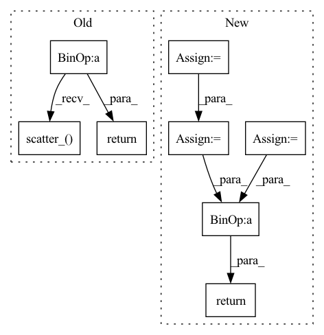

Pattern ID :1297

Before Change
).detach()
a.scatter_(dim=1, index=label.unsqueeze(1), src=src)
sigma = torch.ones_like(inp, device=inp.device, dtype=inp.dtype) * self.m
src = torch.ones_like(label.unsqueeze(1), dtype=inp.dtype, device=inp.device) - self.m
sigma.scatter_(dim=1, index=label.unsqueeze(1), src=src)
return self.loss(a * (inp - sigma) * self.gamma, label)
if __name__ == "__main__":
After Change
an = torch.clamp_min(sn.detach() + self.m, min=0.)
sigma_p = 1 - self.m
sigma_n = self.m
logit_p = ap * (sp - sigma_p) * self.gamma
logit_n = an * (sn - sigma_n) * self.gamma
loss = torch.log(1 + torch.clamp_max(torch.exp(logit_n).sum() * torch.exp(- logit_p).sum(), max=1e38))
z = - torch.exp(- loss) + 1
sp.backward(gradient=z * ap * torch.softmax(logit_p, dim=0))
sn.backward(gradient=z * an * torch.softmax(logit_n, dim=0))
return loss.detach()
if __name__ == "__main__":
In pattern: SUPERPATTERN
Frequency: 3
Non-data size: 8
Instances
Fragment ID: 4552389
Project Name: tinyzeamays/circleloss
Commit Name: 9c909ec6274b1c9c139a62f9f84ecf91c5edee35
Time: 2020-04-03
Author: 1049793129@qq.com
File Name: circle_loss.py
M Class Name: CircleLoss
N Class Name: CircleLossBackward
M Method Name: forward(3)
N Method Name: forward(3)
M Parent Class: nn.Module
N Parent Class: nn.Module
M File Name: circle_loss.py
N File Name: circle_loss.py
M Start Line: 23
M End Line: 34
N Start Line: 43
N End Line: 58
'>
Before Change
def forward(self, pred, target):
log_prob = F.log_softmax(pred, dim=-1)
dist = torch.empty_like(pred).fill_(self.smoothing / (pred.size(-1) - 1))
dist.scatter_(dim=-1, index=target[..., None], value=(1 - self.smoothing))
loss = F.kl_div(log_prob, dist)
return loss
After Change
self.vocab = vocab
def forward(self, pred: torch.Tensor, target: torch.Tensor, mask: torch.Tensor):
pred = pred.flatten(0, 1)
target = target.flatten(0, 1)
mask = mask.flatten(0, 1).float()
chunked_pred = torch.chunk(pred, chunks=self.chunk, dim=0)
chunked_target = torch.chunk(target, chunks=self.chunk, dim=0)
chunked_mask = torch.chunk(mask, chunks=self.chunk, dim=0)
log_prob = [F.log_softmax(p, dim=-1) for p in chunked_pred]
loss = [self.smoothed_loss(p, t, m)[None]\
for p, t, m in zip(log_prob, chunked_target, chunked_mask)]
loss = torch.cat(loss, dim=0).sum()
return loss / mask.sum()
def smoothed_loss(self, log_prob: torch.Tensor, target: torch.Tensor, mask: torch.Tensor) -> torch.Tensor:
dist = torch.full_like(log_prob, fill_value=self.smoothing / (self.vocab - 2))
'>
Fragment ID: 4552391
Project Name: rick-mccoy/reformer-pytorch
Commit Name: 3411114d22e0bfcae2e106f5c82a3211da83f409
Time: 2020-02-29
Author: rickmccoy3141@gmail.com
File Name: model/labelsmoothing.py
M Class Name: LabelSmoothing
N Class Name: LabelSmoothing
M Method Name: forward(4)
N Method Name: forward(3)
M Parent Class: nn.Module
N Parent Class: nn.Module
M File Name: model/labelsmoothing.py
N File Name: model/labelsmoothing.py
M Start Line: 11
M End Line: 16
N Start Line: 13
N End Line: 24
'>
Before Change
self.loss = nn.CrossEntropyLoss()
def forward(self, inp: Tensor, label: Tensor) -> Tensor:
a = torch.clamp_min(inp + self.m, min=0).detach()
src = torch.clamp_min(
- inp.gather(dim=1, index=label.unsqueeze(1)) + 1 + self.m,
min=0,
).detach()
a.scatter_(dim=1, index=label.unsqueeze(1), src=src)
sigma = torch.ones_like(inp, device=inp.device, dtype=inp.dtype) * self.m
src = torch.ones_like(label.unsqueeze(1), dtype=inp.dtype, device=inp.device) - self.m
sigma.scatter_(dim=1, index=label.unsqueeze(1), src=src)
return self.loss(a * (inp - sigma) * self.gamma, label)
def convert_label_to_similarity(normed_feature: Tensor, label: Tensor) -> Tuple[Tensor, Tensor]:
After Change
an = torch.clamp_min(sn.detach() + self.m, min=0.)
delta_p = 1 - self.m
delta_n = self.m
logit_p = - ap * (sp - delta_p) * self.gamma
logit_n = an * (sn - delta_n) * self.gamma
loss = self.soft_plus(torch.logsumexp(logit_n, dim=0) + torch.logsumexp(logit_p, dim=0))
return loss
if __name__ == "__main__":
'>
Fragment ID: 4552397
Project Name: tinyzeamays/circleloss
Commit Name: 61758eefe091cf44f4de87aadd84fcb2bc377f94
Time: 2020-04-04
Author: 1049793129@qq.com
File Name: circle_loss.py
M Class Name: CircleLossLikeCE
N Class Name: CircleLoss
M Method Name: forward(3)
N Method Name: forward(3)
M Parent Class: nn.Module
N Parent Class: nn.Module
M File Name: circle_loss.py
N File Name: circle_loss.py
M Start Line: 24
M End Line: 35
N Start Line: 28
N End Line: 39